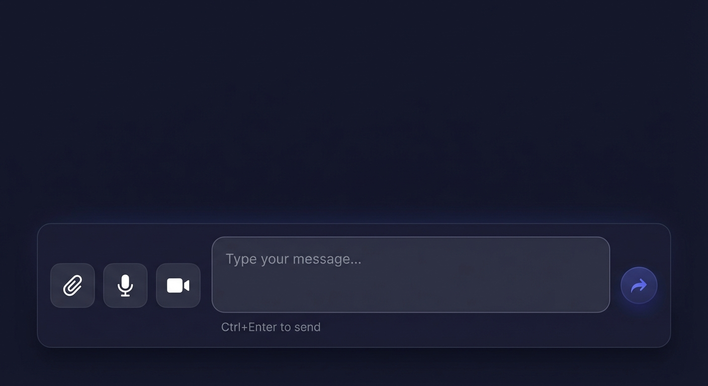
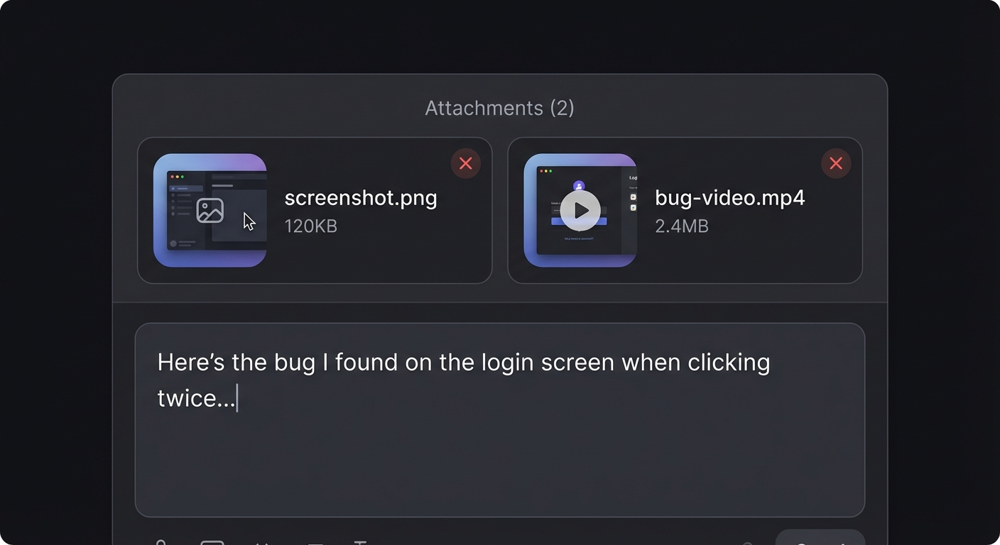
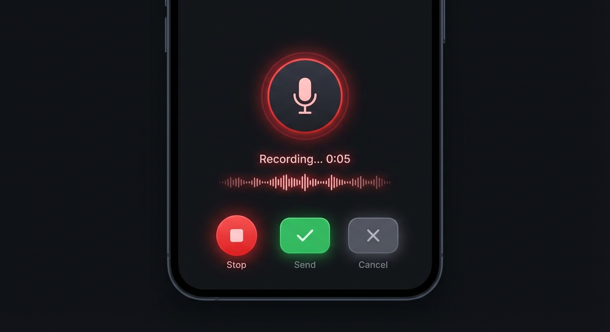
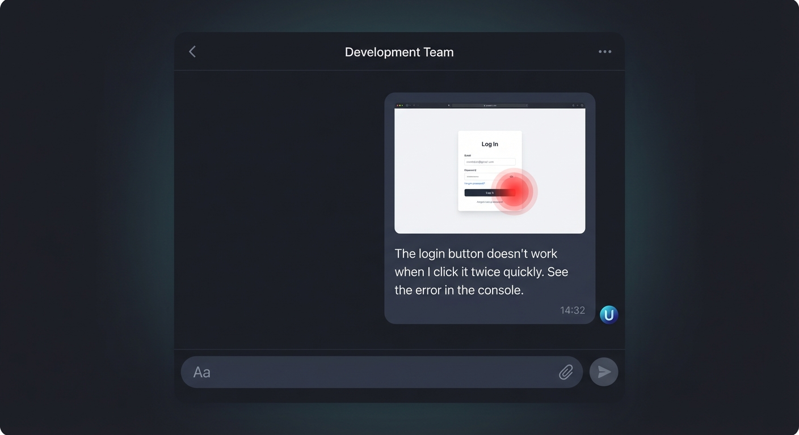

WebChat UI Enhancement — Design Document
Date: February 28, 2026 |
Status: Design Approved |
Session: WebChat |
Ready for: Sub-Task 1 Implementation
1. Overview
Enhance the WebChat interface to support rich media messaging (images, voice, video)
and improve text input UX. The goal is a unified composer that handles all message
types seamlessly.
Core Principle: One input area handles everything — text, files, and voice.
No mode switching, no complexity. Just type, attach, or record.
2. Requirements
| # |
Requirement |
Priority |
| 1 |
Send pictures, voice, and video to AI |
High |
| 2 |
Mixed text + media in one message (e.g., screenshot + bug description) |
High |
| 3 |
Enter = new line, Ctrl+Enter = send message |
High |
| 4 |
Voice message type (record & send audio) |
Medium |
3. UI Mockups
3.1 Input Bar — Bottom Composer
The new input bar combines attachment buttons, multi-line text area, and send button
in one unified interface. Users can type, attach files, or record voice without switching modes.

Figure 1: Input bar with attachment buttons (📎 File, 🎤 Voice, 🎥 Video),
multi-line text area, and send button. Hint text shows "Ctrl+Enter to send".
3.2 Attachment Preview — Mixed Content
When files are selected, they appear in an attachment preview area above the text input.
Users can see thumbnails, file names, sizes, and remove attachments if needed.
Text can be typed alongside attachments.

Figure 2: Attachment preview showing image and video thumbnails
with remove buttons, above the multi-line text input area.
3.3 Voice Recording Interface
Voice recording happens inline. Users click the microphone button, see a recording
interface with timer and waveform, then choose to send or cancel.

Figure 3: Voice recording interface with pulsing red indicator,
timer (0:05), audio waveform visualization, and Stop/Send/Cancel buttons.
3.4 Message Display — Rich Content
Sent messages display with inline media previews. Images show as thumbnails that can
be clicked to expand. Text appears below or alongside media in the same bubble.

Figure 4: Message bubble showing image attachment with bug highlight
and descriptive text below. Dark theme with rounded corners and subtle shadows.
4. Keyboard Behavior
New Keyboard Shortcuts:
• Enter — Insert new line
• Shift+Enter — Insert new line (alternative)
• Ctrl+Enter — Send message
• Cmd+Enter — Send message (Mac)
• Esc — Cancel recording / Clear attachments
5. Technical Implementation
5.1 File Handling Specifications
| Type |
Max Size |
Storage |
Processing |
| Image |
10MB |
Base64 inline |
Preview thumbnail |
| Video |
50MB |
Blob URL |
Preview first frame |
| Voice |
5 minutes |
Blob URL |
Waveform visualization |
5.2 Message Payload Format
{
"id": "msg-uuid",
"timestamp": "2026-02-28T15:15:00Z",
"sender": "user",
"content": {
"text": "string or null",
"attachments": [
{
"type": "image|video|audio",
"name": "filename.jpg",
"size": 12345,
"data": "base64-or-blob-url",
"mimeType": "image/jpeg"
}
]
}
}
5.3 Required Browser APIs
- FileReader — Read files as base64 for preview and transmission
- MediaRecorder — Record voice and video streams
- getUserMedia — Access microphone and camera
- URL.createObjectURL — Generate preview URLs for blobs
6. User Flows
6.1 Sending Mixed Message (Text + Screenshot)
1. User clicks 📎 button → File picker opens
2. User selects screenshot.png → Preview appears in attachment bar
3. User types bug description in text area
4. User presses Ctrl+Enter → Message composed with text + attachment
5. Message sent to AI → AI receives both text and image
6. Message displays in chat → Shows thumbnail + text in same bubble
6.2 Voice Recording Flow
1. User clicks 🎤 button → Browser requests mic permission
2. Permission granted → Recording UI appears with red indicator
3. User speaks → Timer counts up, waveform visualizes audio
4. User clicks Stop → Recording ends, preview ready
5. User clicks Send → Voice message transmitted
(or Cancel → Discard recording)
7. Before vs After Comparison
Before (Current)
- Single-line input only
- Press Enter = sends immediately
- No media support
- Text-only messages
- Can't describe screenshots
After (Proposed)
- Multi-line textarea
- Ctrl+Enter to send
- Image, video, voice support
- Mixed content messages
- Attach + describe in one go
8. Design Decisions
Confirmed Design Decisions:
• Voice recording: Click-to-toggle (click to start, click to stop)
• Video recording: Inline in chat interface (no modal)
• File size limits: 10MB images, 50MB video — accepted
• Platform: Mac only — no mobile support needed
9. Implementation Plan (Broken into Sub-Tasks)
Implementation will proceed in 3 sub-tasks, each delivering a runnable product
for review before proceeding to the next.
| Sub-Task |
Deliverable |
Demo Checklist |
Est. Time |
| 1. Input UX |
Textarea input with keyboard shortcuts |
• Multi-line textarea working
• Enter inserts new line
• Ctrl+Enter sends message
• Hint text visible
• Demo: Type multi-line text, send
|
1-2 hours |
| 2. File Attachments |
File picker + attachment preview + mixed send |
• 📎 button opens file picker
• Images show preview thumbnails
• Can attach + type text together
• Ctrl+Enter sends both
• Demo: Attach screenshot + describe bug
|
2-3 hours |
| 3. Voice Recording |
Inline voice record + playback + send |
• 🎤 button starts recording
• Click-to-toggle (not hold)
• Shows timer + waveform
• Preview before send
• Demo: Record voice, preview, send
|
2-3 hours |
| Total |
|
5-8 hours |
9.1 Sub-Task Workflow
Start → Sub-Task 1 (Input UX) → [Demo to Louis]
↓ Approved
Sub-Task 2 (Attachments) → [Demo to Louis]
↓ Approved
Sub-Task 3 (Voice) → [Final Demo] → Done
10. Approval
Status: Awaiting review and approval.
Please review the design mockups above and confirm:
Overall approach (unified composer)
Keyboard behavior (Enter = newline, Ctrl+Enter = send)
Attachment UI layout
Voice recording flow
Answers to open questions
Once approved, implementation will begin following the 3-phase plan above.